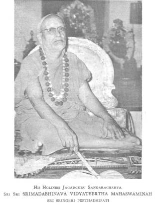

AADI SANKARA AND SRINGERI PEETHAM
SRI VIMALANANDA BHARATI
SWAMIJI
Sri Siddheswari Peetham,
Courtallam

It
is a familiar notion among Hindus that there are four Yugaas, (epochs) and the
present one is Kali Yuga. In spiritual field, Aadi Sankara is considered to be
the present Yuga Purusha. If he was not there, today India would have been
entirely different. Prior to Sankara, the Hindu religious system got
disorganised and in a way damaged by Buddhistic and Jain creeds. The real
spirit of the scripture got shrouded, and many misinterpretations assumed the
form of “true religions” and “pure” forms. Unlike the Avataaras of Vishnu
(incarnations of the Lord) which dealt with “law and order” problems, the
Sankara Avataara had a specific purpose, i.e., re-establishment of the Vedic
spiritualism. The Hindu Veda (Scripture) is accepted to be the breath of the
Lord, and no mortal claims its authorship. This scripture is mostly universal
in its scope and is broadly divided into ritual (Karma), devotional (Upaasana)
and spiritual (Jnaana) sections. Ritualism is for beginners and devotionalism
is for adepts, while spiritualism is for the advanced. The essence of the
scripture, nay the whole religion, must be found in the spiritual part (Jnaana
Kaanda) only. Jnaana Kaanda which is available in Upanishads (which are
tentatively categorised into 108 texts) is the final resort for the seeker of
the best and highest. Aadi Sankara’s contribution gives an extreme focus to the
spiritual perfection as opposed to devotional or ritual. His oft quoted saying
is “Emancipation is solely and truly by spiritual practice” (Jnaanadevatu
Kaivalyam) and not by mere rituals or sole devotion or simple moral
behaviour or the like.
This
leads to a comment that Sankara’s preachings must be confined to a few among
many. Sankara, while anticipating such comments,
answered the same saying that Veda must be studied by all and the rituals
(Yaaga, Yajna, Kratu, Ishti, etc.) mentioned therein, must be performed by all
beginners (Vedo nityam adheeyataam,
Taduthitam karma swanushteeyataam). One should mug up mathematical tables,
if he were to proceed to a study of mathematics. Similar is Veda and rituals.
Another
comment against Sankara is that his creed is mostly theoretical and less
practical: being so, “it is not easy to attain.” True it is: but, in experience
we see that wrong theories lead to rotten practices, while right theories may
or may not produce good, but they do not at all lead to incorrect tracks. A
preacher or teacher must utter the best and finest, unmindful of the following
he may or may not have. All scriptures of all religions propound the best and
most solemn, though a small fraction of the followers may strive for it. The
true test of a prophet is the eternity of his sayings automatically carried on
from generation to generation. Sankara’s preachings,
howsoever idealistic they are, have stood the test of time. Today, the entire
world (the best brains among men) have come to recognise that Sankara’s
doctrines are foolproof and in a way universal.
If
one sums up Sankara’s mass of doctrines, it can be put succinctly as “God is
reality, Cosmos is illusory and Soul is none but God.” It may also be said
poetically as “God is one, Rest is none, Soul is sole, All is whole.” (Brahma Satyam, Jagat Midhya, Jeevo Brahmaiva na aparah). That “God is
Reality” is almost accepted by all religions and creeds, but about “Cosmos”
(Jagat) many differ. The Dualists (Dwaitins) say that Cosmos is eternal: some
say the Universe is unfolding as a sprout from a seed, or as curds from milk
(This doctrine is akin to the theory of evolution–Parinaama Vaada). Some say
the Cosmos is a combination of atoms, and that atoms are eternal (This doctrine
is known as Anu Vaada or Aarambha Vaada). Sankara says that the Cosmos is
illusory as a dream-world or as the sight of snake on a rope in twilight. Men
implant their own notions, and do convert a rope into a snake or a black
garland or a crooked water course, etc. It is man’s description in names and
forms that makes or unmakes the universe. Men have another curious habit of
believing it to be true of whatever and wherever they see. A tiger in dream is
considered “true” by the man in dream. He scarce thinks then that “this is a
dream and the tiger is a mere dreamy object.” When awake, he realises that what
he suffered during the night was by a
mere dreamy tiger. Therefore, What appeared in a dream was “true and real” for
the dreamer and its illusoriness becomes evident when he comes into a wakeful
state. With similar logic, so long you are in a wakeful state, you see this
world to be real, but once you enter into a super-state (Tureeya Avastha) you
realise that the Cosmos you saw before was a mere illusion. This doctrine of
universe is known as “Vivartha Vaada” or the principle of imposition. In short,
Sankara says that unless you practice and reach a super state of “Samadhi”, you
may not be able to realise that the universe is illusory or Midhya. Till then,
you are in a better type of dream which you call as wakefulness (Jaagrat).
A question is often raised as to why the
philosophers are bothered about the truth or otherwise of the Cosmos. Is it not
sufficient for them (the philosophers) to explain or expound God and recommend
the same to seekers? This query has some force prima facie. But on close examination, the issue appears to be relevant and must
needs answered, else philosophy becomes empty. If the Cosmos is real or
eternal, one must cling to it permanently, for all the pleasures are available
here. “As the Cosmos is composed of five elements, a mass of energy, space,
time, etc., it may be blended by science to suit ‘all’ our requirements and
pleasures in particular.” Thus runs the argument of the non-believer. But, in
fact, none including the greatest scientists, is giving a guarantee about the
span of his own life and his ability to enjoy. At various stages, they admit
that “nature” has its own laws or limitations. Moreover, so long one is amorous
about the worldly pleasures, he may not be inclined to think or enter into
higher realms. The “eternity” of the Cosmos and the availability of its
so-called pleasures made men on this globe either wicked or idle folk. Hence
all spiritualists of all climes and creeds decry, in high tones, the Cosmos and
its pleasures. Sankara puts the theory on a fundamental basis that the Cosmos
is a creation of erroneous brains (snake-rope theory) or of dreamy brains
(Space prevents me from discussing this aspect in extenso).
If cosmos is but a dreamy picture, “Who am I?” is
the next question, “I”, being a part of the Cosmos, I must also be a dreamy
creature. If that is so, the entire argument leads to a mere void, “I am awake
now”, “I dreamt last night between 3
to 5 A. M.”, “I slept soundly from 10 P. M., to 2 A. M.”. Such statements are truly
and validly made and are accepted as correct. The three states (awakefulness,
dream and sound sleep) are observed by myself and, therefore, “I” must be a
witness to all the three states. The Hindu philosophy goes a bit further and
says that the soul (“I”) is a permanent witness to births and deaths that
follow successfully and without a suspense. Hence, by a simple logic (leaving
the Hindu dogma for the present) “I” am a witness to my whole career, and there
is some sort of eternity for “I” as compared to my three states. Hence “I” the
Jeeva or individual has eternity. Only the world in which he dwells can be
proved to be illusory (Midhya) though not nugatory (Soonya). In illusion, we
mistake one for another (rope to a snake, or oyster to silver), while in
negation (Soonya) we create one on nothing as a son to a barren woman, or a
flower from the sky or a horn to hare, or water in mirage. This Soonya theory
is a speciality to Buddhistic creed. Sankara condemns the “Soonya Vaada” as
opposed to good logic or even common sense. Anything substantial or tangible
cannot emanate from nothing. The Cosmos is apparently tangible and its parent
cannot be a state of nothingness.
Hence,
in the sphere of philosophy the reality or unreality of Cosmos must have to be
enunciated, with special reference to soul (I-ness) which must be maintained to
be eternal.
If
the soul is eternal, it is put forth by some that there must be as many
eternals in this Cosmos as there are animate beings, including men, animals,
ants, etc. The traditional view is that there is only one eternity, i.e., God.
The dualists (Dwaitins) maintain that all souls are eternal, and in their view
eternity can be in multiples. Sankara vehemently objects to the theory of
variety or numerality to eternity. What is numerous or various; is bound to
perish and so number and eternity go at variance; Secondly, what is numerous or
various is capable of observation to sense organs; and observability is
offensive to eternity. Thirdly, eternity makes a Jeeva (individual) perpetually
bound. Hence a Jeeva cannot hope or aspire for emancipation or liberation
(Moksha). So Jeeva and God are one and one only (Aham Brahma Asmi), because they are eternity.
Today
in modern science or sociology, experts are making attempts to excavate common
principles for reaching “oneness”; and division or variety in whatever form is
being abhorred. In the
view of Sankara, nay Vyasa and others, the soul is one and one, while bodies
may be many and various, as the current is one, though bulbs may be many. The
sun (Apollo) is one, though his reflected images in various jars of water be
many. The clay is one
though its products of pots and kettles, etc., may be various. Gold is one
though the ornaments and jewels may be varied or numerous. Thus analogies are
enunciated to propound the principle that soul is one and bodies (Sareeras) may
be various.
A
subtle doubt may arise as to why people are generally fond of separateness and
exclusiveness, with notions of young and old, poor and rich, black and white,
man and woman, etc. This arises due to lack of proper instruction of sound
truths. Of course, after several devastating wars, some nations are of late
veering round for propagation of “oneness in international affairs.” To speak
frankly, the strife or unrest in a family, nation, or inter-nation, etc., is
due to lack of philosophic education and culture. Sankara’s doctrines are far
ahead of the international views of the modern world. Variety and numerality,
according to him, are a mere mushroom growth on the fallacious habit of
superimposition (Adhyaasa). In materialistic world, man gradually slipped into
the error of dubbing or implanting his possessions on his self. He says “I am
deaf or lame” thereby impounding the deafness of the ear and lameness on his
self (I-ness). He would also say, “I am angry, I am wise, etc.,” thereby
engrossing his psychic features upon his self. Thus all his physical and
psychic merits and demerits are implanted on his self. This is technically
called “Adhyaasa” which causes variety, love, hatred, etc., which are the
pillars of material business. Having analysed the fallacy of Adhyaasa, Sankara
reveals the remedy by saying that true philosophy which propounds oneness of
eternity or soleness of soul makes a man liberated.
Then
again, there are counters in defining “liberation” (Mukti). Simple logic
suggests that “liberation” does not arise unless “bondage” is established.
Sankara advises the mortal to stand and ponder why he is not happy. The answer
is that he is bound by family ties, social ties, national ties or ties of
profession and avocation, etc. Suppose one answers that there can’t be any
“ties” to a monarch like Alexander or Caesar; right it may be that he has no domestic
or social or national worries. There are external ties or worries. But what
about the worry of his failing health or fear of death? This worry does haunt
the monarch or scholar or devotee alike. Here Adhyaasa (superimposition) works
on him, and he thinks that the body’s decay and perish are tantamount to the
decay and perish of his self. Now, we may deduce the element of “bondage” to be
a mere psychic misconception of superimposition or false attribution of bodies
on the soul. The psychic error is bondage and its correct view is liberation.
Error (Ajnaana) can be cured only by correct knowledge (Jnaana) and not by
penance or ritual or charity or good deeds. Hence Sankara emphatically
propounds the theory that only correct knowledge causes liberation from
bondage.
When
the individual is freed from error, he is completely free here and here alone.
This opportunity is open to one and all, irrespective of sex, caste, creed or
religion. Sankara’s doctrinaire is doubtlessly universal and foolproof. All his
writings abound in stark and sound reasoning and there is none to beat him in
exposing the correct theories.
As
propaganda is the process of diffusion of knowledge, Sankara had established
four Peethams or sanctuaries in the four directions of India. In South at
Sringeri, in East at Puri, in North at Badari and in West at Dwaraka. Four
pontiffs were set up, and they are imparting the tenets of Sankara’s dicta, of
course, following the rules of Hindu scripture. These pontiffs have clearcut
territorial jurisdictions, and they maintain an ideal, spiritual and spotless
life. They are born bachelors with profound learning and super-worldly
temperament. They are the torchlights of Adwaitic creed (non-dualism).
The
present pontiff of Sringeri Peetham, Sri Sri Sri Abhinava Vidyateertha
Mahaswami, is a rare piece of personality with scholarship, calmness, plenty of
grace and abundant human approach. Once in a decade, he undertakes a tour in
the entire land to bless the weak, guide the educated, teach the rich, check
the arrogant and advise the powerful. In this vast land of 65 crores of people,
he is the sole connecting link between the northern and southern regions and
his messages are heard by the masses with
rapt attention and devotion. Recently for two months, he was the State Guest of
Andhra Pradesh Government at Hyderabad, and somehow the Andhras take him to be
their own patria potestas .
Sri
Swamiji has completed his sixty years of mortal age in November, 1977, and
Madras has taken the honour of celebrating him in a fitting manner. For us Yaties, Sri Swamiji is all,–Aatma and eternal.
May he bless us for ever.
I, of Siddheswari Peetham, Courtallam, with the
grace and permission of my revered Guruji, Sri Sri Sri Trivikrama Ramananda
Bharati Swamiji, can do no more obeisance to my supreme godhead Sri Sri Sri
Jagadguru Abhinava Vidyateertha Mahaswami than making a whole-hearted Pranaama
to Him, the All-Pervading Soul, whose grace I covet for ever.